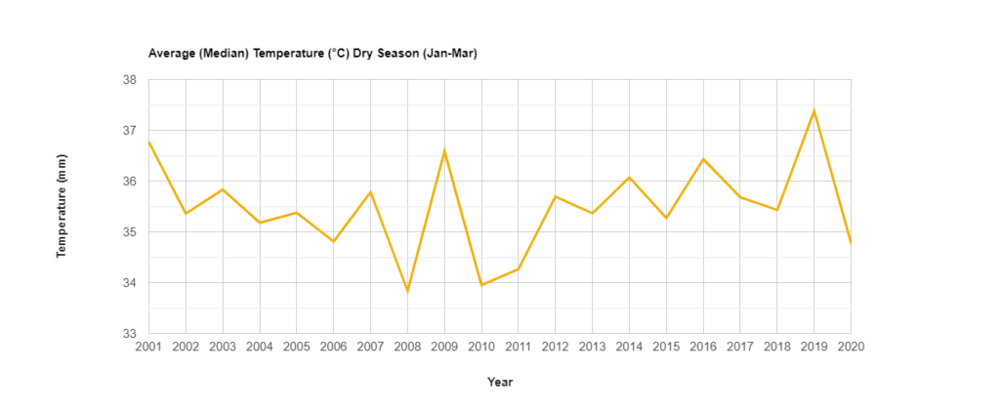

Javascript
Welcome to the "JavaScript" section of this documentation. This section is dedicated to providing a solution-based approach to various geospatial analytics problems, complete with code explanations and illustrative outputs. The code presented here is based on the concepts and functionalities offered by the Google Earth Engine (GEE) JavaScript API.
If you are unfamiliar with the GEE JavaScript API or need further information on its usage and capabilities, you can refer to the official Google Earth Engine JavaScript API documentation. This documentation serves as a valuable resource for understanding the core functionalities of the GEE platform and its JavaScript API, which form the foundation for the solutions and projects presented in this section.
Feel free to explore the projects and code examples provided here to gain insights into how GEE can be leveraged for various geospatial analysis tasks.
Time Lapse (Landsat Images)
Time lapse animations, are an interesting tool used to visualize changes on the earth surface over time. The following animation is created by the code provided, and shows the changes over a 20 years period of time by the construction of a river dam in the province of Chiriqui, Republic of Panamá.

Time Lapse of Landsat Images from the Google Earth Engine platform.
Code
| time_lapse.js | |
|---|---|
1 2 3 4 5 6 7 8 9 10 11 12 13 14 15 16 17 18 19 20 21 22 23 24 25 26 27 28 29 30 31 32 33 34 35 36 37 38 39 40 41 42 43 44 45 46 47 48 49 50 51 52 53 54 55 56 57 58 59 60 61 62 63 64 65 66 67 68 69 70 71 72 73 74 75 76 77 78 79 80 81 82 83 84 85 86 87 88 89 90 91 92 93 94 95 96 97 98 99 100 101 102 103 104 105 106 107 108 109 110 111 112 113 114 115 116 117 118 119 120 121 122 123 124 125 126 127 128 129 130 131 132 133 134 135 136 137 138 139 140 141 142 143 144 145 146 147 148 149 150 151 152 153 154 155 156 157 158 159 160 161 162 163 164 165 166 167 168 169 170 171 172 173 174 175 176 177 178 179 180 181 182 183 184 185 186 187 188 189 190 191 192 193 194 195 196 197 198 199 200 201 202 203 204 205 206 207 208 209 210 211 212 213 214 215 216 217 218 219 220 221 222 223 224 225 226 227 228 229 230 231 232 233 234 235 236 237 238 239 240 241 242 243 244 245 246 247 248 249 250 251 252 253 254 255 256 257 258 259 260 261 262 263 264 265 266 267 268 269 270 271 272 273 274 275 276 277 278 279 280 281 282 283 284 285 286 287 288 289 290 291 292 293 294 295 296 297 298 299 300 301 302 303 304 305 306 307 308 309 310 311 312 | |
Measuring land surface temperature with MODIS data
Script Description: This script is designed to analyze temperature changes within the Cochea River watershed using the Google Earth Engine (GEE) platform and MODIS (Moderate Resolution Imaging Spectroradiometer) datasets. Specifically, it focuses on measuring temperature variations during both the rainy and dry seasons over a 20-year period. The primary objectives of this script are to generate an animated GIF, a time series graph depicting the Average Median Temperature (°C) as recorded by the MODIS sensor, and a regional overview of the study area.
Script Workflow: 1. Data Acquisition: The script begins by accessing MODIS datasets, which provide reliable temperature data with global coverage and high temporal resolution.
-
Temporal Selection: It then filters the MODIS data to isolate the specific time periods corresponding to the dry and wet seasons over the 20-year span.
-
Spatial Region Selection: The script defines the study area within the Cochea River watershed, ensuring that the analysis is limited to the relevant geographic scope.
-
Temperature Computation: Using the MODIS temperature data, the script calculates the Average Median Temperature (°C) for each pixel within the study area, both for the dry and wet seasons.
-
Visualization Generation:
-
Animated GIF: The script generates an animated GIF, showcasing the temporal evolution of temperature changes over the 20-year period. Each frame of the GIF represents a specific time step, offering a dynamic visual representation of temperature variations.

Time Lapse of MODIS Land Surface Temperature (Dry Season) from the Google Earth Engine platform.

Time Lapse of MODIS Land Surface Temperature (Rainy Season) from the Google Earth Engine platform.
-
Time Series Graph: Additionally, the script creates a time series graph, displaying the Average Median Temperature (°C) as a function of time. This graph provides a clear overview of temperature trends during the dry and wet seasons.

Average median temperature for the Dry Season measured from MODIS time series.

Average median temperature for the Wet Season measured from MODIS time series.
-
Regional View: Lastly, the script produces a regional view of the study area, allowing users to geospatially contextualize the temperature changes observed in the Cochea River watershed.
By following this technical script, users can conduct a rigorous analysis of temperature fluctuations within the specified region and timeframes, enabling in-depth insights into environmental changes over the 20-year period.
Code
| land_surface_MODIS.js | |
|---|---|
1 2 3 4 5 6 7 8 9 10 11 12 13 14 15 16 17 18 19 20 21 22 23 24 25 26 27 28 29 30 31 32 33 34 35 36 37 38 39 40 41 42 43 44 45 46 47 48 49 50 51 52 53 54 55 56 57 58 59 60 61 62 63 64 65 66 67 68 69 70 71 72 73 74 75 76 77 78 79 80 81 82 83 84 85 86 87 88 89 90 91 92 93 94 95 96 97 98 99 100 101 102 103 104 105 106 107 108 109 110 111 112 113 114 115 116 117 118 119 120 121 122 123 124 125 126 127 128 129 130 131 132 133 134 135 136 137 138 139 140 141 142 143 144 145 146 147 148 149 150 151 152 153 154 155 156 157 158 159 160 161 162 163 164 165 166 167 168 169 170 171 172 173 174 175 176 177 178 179 180 181 182 183 184 185 186 187 188 189 190 191 192 193 194 195 196 197 198 199 200 201 202 203 204 205 206 207 208 209 210 211 212 213 214 215 216 217 218 219 220 221 222 223 224 225 226 227 | |